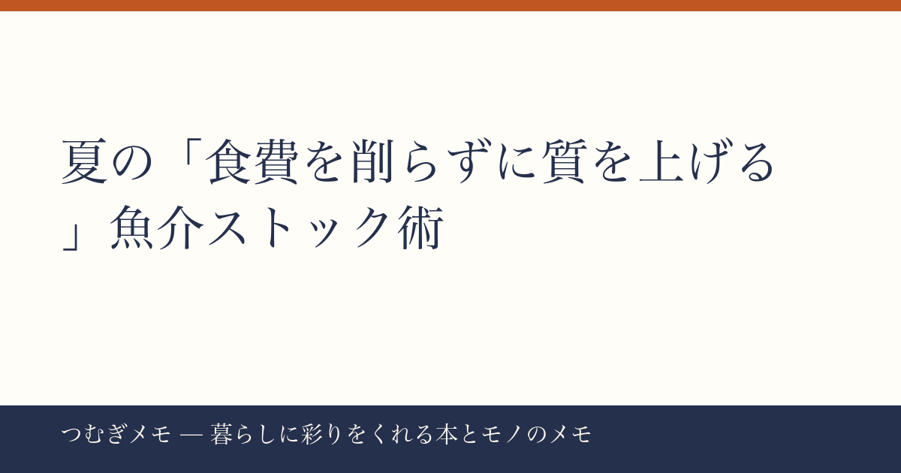

こんにちは、つむぎです。7月も後半に入り、夏休みのごはん支度がいよいよ本格化してきましたね。この記事では、今週楽天でトップを独走した「訳あり骨なし魚介」の選び方・使い方を軸に、忙しい夏を乗り切る冷凍ストック習慣を深掘りします。
今週の要点
- 骨取りさば2kg・骨取り銀さけ1kgがそれぞれ楽天1位・2位を同時獲得
- どちらも「夏休みごはん応援」セールで通常価格の半額以下に
- レビュー数が合計3万5000件超という桁違いの実績が品質の裏付けになっている
---
今週の楽天総合ランキングで、北欧産無塩訳あり骨取りさば（2kg・9,980円→4,990円、レビュー35,452件・★4.78）と訳あり骨取り銀さけ（1kg・7,980円→3,990円、レビュー2,863件・★4.78）がそれぞれ1位・2位を同時に占めた。2つの魚介冷凍品がトップ2を並走するのはなかなか見られない光景で、「夏休みに向けて魚のストックを確保したい」という需要が一気に噴出したと読める。
なぜ今なのか、背景は明確だ。夏休みが始まると、給食という「外注ランチ」がなくなり、1日3食の準備が家庭に戻ってくる。肉類は火通りのコントロールがしやすい反面、魚は「骨が怖い」「子どもが食べにくい」という理由で夏の食卓から遠ざけられがちだ。骨取り加工済みの冷凍魚は、その障壁をそのまま取り除いてくれる。さらに「訳あり」というラベルは形の不揃いを意味するだけで、鮮度・味には関係しないことが広く知られるようになった。★4.78という高評価がそれを証明している。
今日できること: セール期間（7月26日正午）が迫っている。まず自宅の冷凍庫の空きを確認し、1〜2kgが入るスペースを確保してから注文する。届いたら100gずつラップで小分けにしておくと、一人分・子ども分と使い分けられて無駄が出ない。
---
冷凍魚のECでよく出てくる「訳あり」と「骨取り」は、別々の加工工程を指す言葉だ。整理しておくと選択がずっと楽になる。
訳ありとは主に「規格外の形・サイズ」を指す流通用語で、鮮度や風味とは無関係なことがほとんどだ。今週のさばは「北欧産・無塩・天然」と産地・加工方法がきちんと明示されており、訳あり表記の中では情報開示が丁寧な部類に入る。レビュー件数が35,000件を超えているということは、それだけ長期間・大量に購入者がつき続けてきた証拠であり、一時的な話題商品とは性質が異なる。
骨取り（骨抜き）は、加工コストがかかる分だけ値段が上がるのが通常だ。それでも今回の価格帯に収まっているのは、訳ありによるロスコスト削減と、まとめ買い前提の大容量設計が効いている。2kgという量は一人暮らしには多く感じるが、4人家族なら1食2切れ×5〜6回分の計算になり、2週間もあれば使い切れるペースだ。
銀さけはチリ産養殖という表記で、さばとは産地も魚種も異なる。二品を組み合わせて冷凍庫に入れておくと、「今日はさば味噌」「明日はさけのムニエル」と献立の幅が自然と広がる。魚を週3回食卓に出すことで食事の彩りが変わるという傾向は、複数の食生活関連の報告でも繰り返し指摘されている。
今日できること: さばと銀さけをセットで購入する場合、冷凍庫の「魚専用トレー」を一段設けるだけで鮮度管理が劇的に楽になる。100円ショップのケースで十分なので、先に用意しておくことをおすすめする。
---
食のストックは節約だけの話ではない、と僕は思っている。冷凍庫に「使えるタンパク質」が入っているという安心感は、夕方の「何作ろう」というプレッシャーを一段下げてくれる。その余裕が、本を読む時間や、子どもと話す時間に転換される。暮らしの豊かさは、モノそのものより「モノが作ってくれる余白」から来ることが多い。
今週の楽天ランキングで一緒に上位に入っていた炭酸水500ml×48本（レビュー16,693件・★4.68）や、軽量折りたたみ日傘（レビュー13,000件超・★4.5）も、根底にある発想は同じだ。「まとめて手配しておく」ことで、毎日の小さな決定コストを減らす。食材も飲み物も日傘も、使い捨てに近いほど頻度が高いものこそ、まとめ買いと定番化が効いてくる。
この夏の食卓を豊かにするための参考として、魚介の調理アイデアや冷凍保存の知識が詰まった本を一冊手元に置いておくのもいい。Amazonで『きょうの料理 冷凍保存の便利帳』を見るのような実用系レシピ本は、ストック食材のレパートリーを一気に広げてくれる。
今日できること: 今週購入した冷凍魚の使いきりレシピを3つだけメモしておく。「さば缶と同じ感覚で使えるか」を試してみると、意外な応用が見つかる。
---
Q. 冷凍の骨取り魚は、解凍後どのくらい持ちますか？
A. 冷蔵解凍した場合、当日〜翌日中に使い切るのが基本です。小分けにして冷凍したまま保管し、使う分だけ前夜に冷蔵庫へ移すルーティンが最も無駄を防げます。
Q. 「訳あり」と書いてあると品質が心配です。何を確認すればいいですか？
A. 確認すべきは「産地」「加工方法（無塩か有塩か）」「レビューの総数と平均評価」の3点です。今週のさばはいずれも明示されており、レビュー35,000件超・★4.78という数字が長期的な品質の安定を示しています。
Q. まとめ買いしたいけれど冷凍庫に空きがありません。どうすればいいですか？
A. まず庫内を一度見直し、「いつ買ったかわからない食材」を消費することが先決です。魚を入れる前に1〜2日、冷蔵庫内の在庫を意識的に使い切る週を設けるだけで、スペースは意外と生まれます。
---
夏の食卓は「何を買うか」より「何をストックしておくか」で決まる——今週のランキングを見ていて、そんなことを改めて感じました。骨取り済みの良質な魚介が半額で手に入るタイミングを逃さず、冷凍庫という「もう一人の家事担当」をうまく活用してみてください。
なお、このブログ「つむぎメモ」はAIと一緒に運営している実験的なメディアです。毎週のバズデータをAIと一緒に分析しながら、「暮らしに本当に役立つ情報」に絞り込む試みを続けています。気に入ってもらえたらXの @tsumugi_memo15 ものぞいてみてください。
📚 目次へ